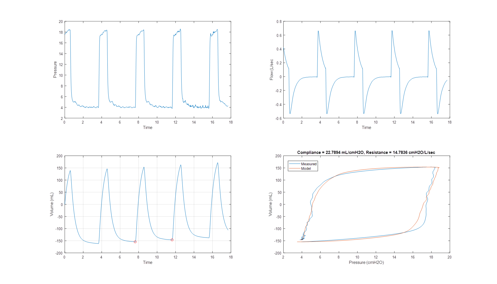

Laboratory Evaluation
Setup

The firmware release was flashed onto the unit and run through a series of tests over the course of 3 days. Maximum pressure, minimum pressure, time at high pressure and time at low pressure were adjusted and measurements made for a subset of the test conditions outlined in table 201.105 of ISO standard 80601-2-12. A 3L bag designed to emulate the lung was salvaged from a consumables kit used on an anesthesia machine. The patient circuit was constructed in accordance with the Mt. Sinai protocol to include a high resistance expiratory port and supplemental oxygen. Air flow rate and pressure were measured using Honeywell pressure chips and a National Instruments data acquisition board. Pressure was sent through a low pass filter and calibrated using a standardized, adjustable pressure column at 0, 15.0 and 30.0 cm H2O. Flow waveforms were acquired as a differential pressure and calibrated using standard 0.6, 1 and 3 L syringes and integrated to calculate tidal volumes using MATLAB. A tube was filled with polymeric stuffing until physiologic resistance was achieved. Resistance and compliance were calculated from the measured pressure volume loop. Resistance was measured to be around 13.4 cm H2O/L/s and compliance was measured to be 35.7 ml/cm H2O. The test set-up is pictured in figure 1.
Results

A few test cases are presented to illustrate the high end of the performance range. The unit was set to a maximum pressure of 30 cm H2O, a minimum pressure of 4 cm H2O, high pressure time of 1 second (inspiration) and low pressure time of 2 seconds (expiration). Results are plotted in figure 2. Tidal volumes were calculated to be 629 ± 0.80 mL. The system took approximately 5 minutes to equilibrate and held stable for > 24 hours. Peak pressures were centered around the set point of 30 cm H2O with a range of approximately 29-32 cm H2O while minimum pressures were also centered around the setpoint of 5 cm H2O with a range of approximately 4-6 cm H2O. Supplemental oxygen was then supplied at a rates of 10, 15 and 20 liters per minute. Linear increases in tidal volume were observed. At 15 L/min of oxygen, the tidal volume increased by approximately 20 mL.
Next steps in validation are to compare time series data from the unit with measured values. These tests were done anecdotally but should be further characterized. Pressures measured experimentally aligned well with those reported by the unit. Flow (tidal volume) measurements made experimentally appear to be higher than those reported by the unit. This could be expected due to measurement error along with the patient circuit between the unit’s flow sensor and the experimental transducers. Initial data indicated tidal volumes at the test lung are approximately 20% higher than those reported by the unit. Further investigation and characterization is warranted.